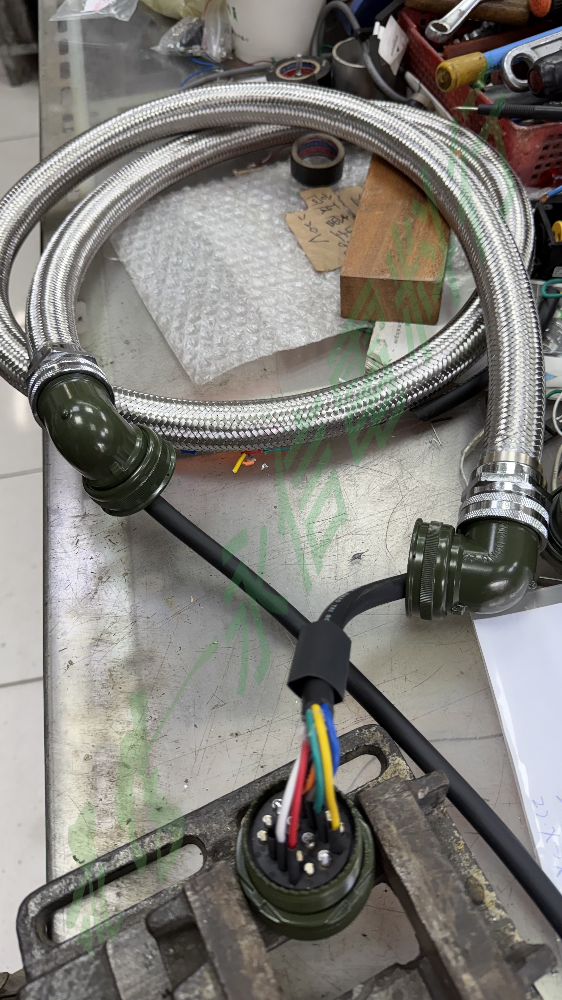
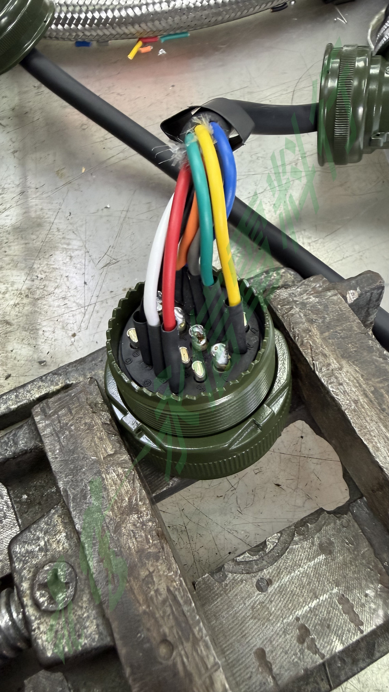
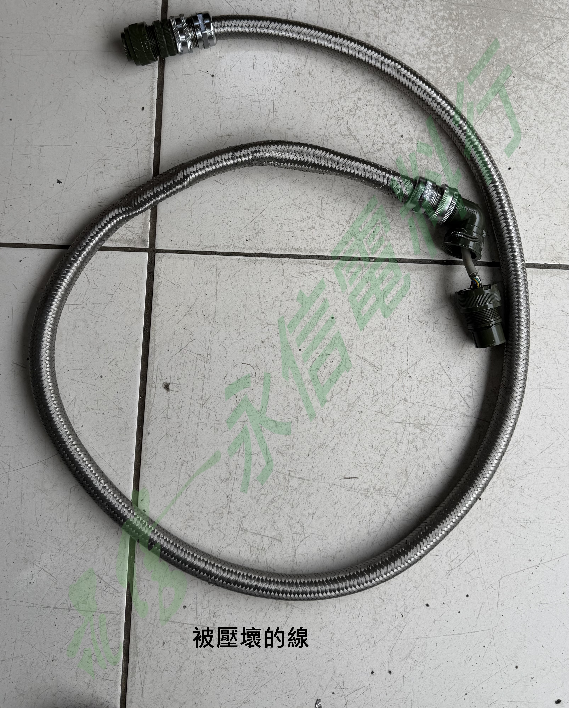
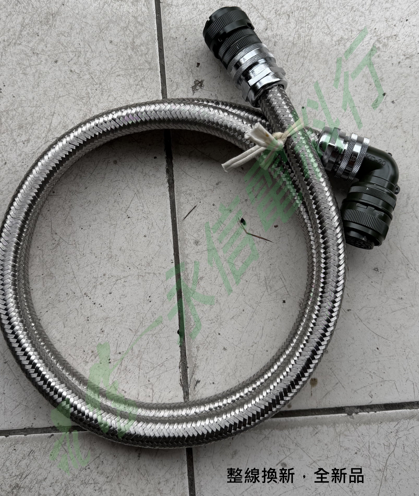
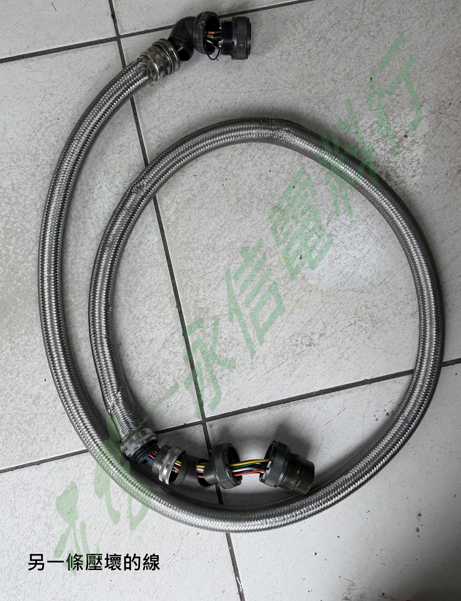
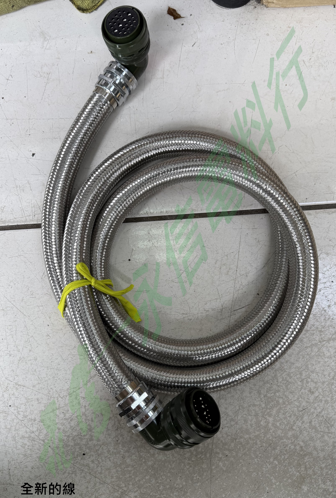

CUSTOM CABLE REBUILD
特殊軍規型接頭客製連接線重製
客戶原有機台連接線因外力受壓損壞，提供舊線作為核對依據，由永信重新製作整組連接線。
作業內容
本次客戶原有連接線因外力受壓造成損傷，委託永信依原線重新製作。此線材使用特殊軍規型接頭，現階段僅依實物確認為特殊軍規型接頭；在完整系列、料號、MIL 規範或腳位尚未確認前，網站不自行推定。
需求依原線重新製作
接頭型式特殊軍規型接頭
原因原線受壓損壞
照片6 張
案例公開原則
只呈現使用者確認的實際製作內容；不公開客戶資訊，也不在資料不足時猜測 MIL 規範、接頭系列、針數、腳位或可直接相容的替代型號。
BEFORE / REBUILD / COMPLETE
損壞、製作與完成紀錄
照片依原件狀況、端接製作與完成品整理。






CUSTOM & SPECIAL
特殊接頭與客製線材
此類線材須依原件、接頭、腳位、線長與設備需求逐案核對，不以單一固定規格販售。